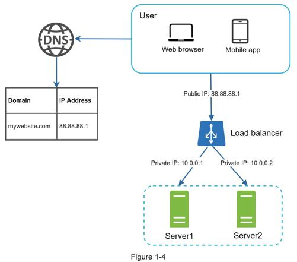

A load balancer evenly distributes incoming traffic among web servers that are defined in a load-balanced set. Figure 1-4 shows how a load balancer works.

As shown in Figure 1-4, users connect to the public IP of the load balancer directly. With this setup, web servers are unreachable directly by clients anymore. For better security, private IPs are used for communication between servers. A private IP is an IP address reachable only between servers in the same network; however, it is unreachable over the internet. The load balancer communicates with web servers through private IPs.
In Figure 1-4, after a load balancer and a second web server are added, we successfully solved no failover issue and improved the availability of the web tier. Details are explained below:
•If server 1 goes offline, all the traffic will be routed to server 2. This prevents the website from going offline. We will also add a new healthy web server to the server pool to balance the load.
•If the website traffic grows rapidly, and two servers are not enough to handle the traffic, the load balancer can handle this problem gracefully. You only need to add more servers to the web server pool, and the load balancer automatically starts to send requests to them.
Now the web tier looks good, what about the data tier? The current design has one database, so it does not support failover and redundancy. Database replication is a common technique to address those problems. Let us take a look.